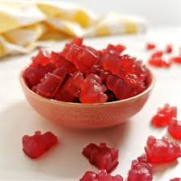

Snacks, yum yum, by far better than any meal or breakfast, look at these delicous recipes that I will be munching all day long.
Choose your snack:
Gummies
Gummies are chewy, succulent, sweet and delicous. here is a good recipe:
Equipment
Small molds for the gummies
Eye dropper
80g (1/3 cup) fruit juice or soda
42g (2 tbsp) of honey
4g (2 tsp) of granulated sugar
1 packet of unflavored gelatin(7g /2 1/2 tsp)
Intructions
Bring 8-g of fruit juice/soda, 42g of honey and 4g of sugar to simmer on medium-high heat in a little saucepan or pot while stirring once in a while. remove from the heat as soon as possible as the mixture starts to bubble
Set aside to let it cool for a few mins, it still should be warm enough to melt the gelatin but not enough to weaken the setting power of the gelatin.
In a small bowl, bloom the unflavored gelatin by mixing it with a splash of water until the gelatin is fully dissolved. The mixture should become quite thick as you stir it
As soon as the gelatin and water are fully incorporated, add it to the slightly cooled juice/soda mixture.
If the gelatin sits it can firm up and become difficult to mix in. If this happens, don't worry. It should still be able to dissolve into the juice mixture, but it will take longer to melt/dissolve fully. Make sure the gelatin is fully dissolved before filling the molds, or else tiny bits of gelatin can clog up the eye dropper.
Use an eye-dropper (they come with most small silicone molds) to carefully fill the silicone molds. Be sure to do this as soon as the gelatin is fully mixed into the juice mixture. If you let it sit and continue to cool, the mixture will start to set.
place the molds in the fride for half an hour, then FEASTüòãüç¨üç¨
Chips
Chips(or crisps if you are a tea addict) are really freaking good, so much crunch, satisfaction and addictivness.
Equipment:
A mandoline or vegetable peeler
A deep skillet for shallow frying
A slotted spoon or strainer
Ingredients:
1 kg(2 lbs) russet potatoes
580g(3 cups) of vegetable oil
A lil bit of salt
Intructions:
Wash the potatoes then peel it ATAP(as thin as possible)
Add all of the potato slices into a large bowl, add water so it fully covers everything, then add ice cubes to pull out the starch, let it sit for 30 mins
Meanwhile, in a large casserole dish with an kitchen towel,
After 30 mins, rinse the potaoes in a colander and shake out as much water as you can. Line a single layer of potatoes on a cloth lined dish. Use either another clean towel or paper towels to pat the top of the potato slices dry. Remove the dry potato slices from the and add it to a bowl or plate for frying. Repeat with the rest of the slices
Heat oil in a large deep skillet till the oil is very hot.
In batches, add the potatoes to the hot oil, one layer, and cook for 4 mins stirring consistently with a slotted spoon until they begin to brown
When they are browned, remove the chips onto some paper towel to let the oil dry, hold in your craving and let it cool, add some salt and fEaStüòãüçüüçüü•îü•î
Mozzarella sticks

Mozzarella sticks are really good, the strechiness and the cheesiness is just too good. This is a recipe for 15 mozza sticks:
Equipment
Mixing bowls
A saucepan/pot
thats it :)
Ingredients:
106g (1 1/2 cups) plain panko
2g (1/2 tsp) Italian seasoning
2g (1/2 tsp) dried parlsey
A pinch garlic powder
A pinch of salt
ground pepper
2 eggs
63g (1/2 cup) all purpose flour
15 whole milk string cheese
Vegie oil for frying
Your favorite sauce as dipping
Intructions:
Crush the panko crumbs untill very fine
Pour the crushed panko into a shallow dish and add the Italian seasoning, parsley, garlic powder, salt, pepper and stir until combined
In a different bowl, crack the eggs and beat it until scrambled
Pour the all purpose flour in another bowl
One at a time, dip the string cheese into the flour then into the eggs and let any excess drip off. Then finally dip i nthe panko crumb mixture.
Repeat this until all the sticks are ready, transfer them into the freezer for a hour
after chilling, fill a saucepan with oil around 6cm(2.5 in) deep with vegie oil, heat the oil over medium high heat for 3 minutes the nremove the sticks from the freezer.
Fry the sticks 2 at a time, until delicous golden brown.
enjoy the mozza sticks with your favorite sauce üòãüßÄüçü